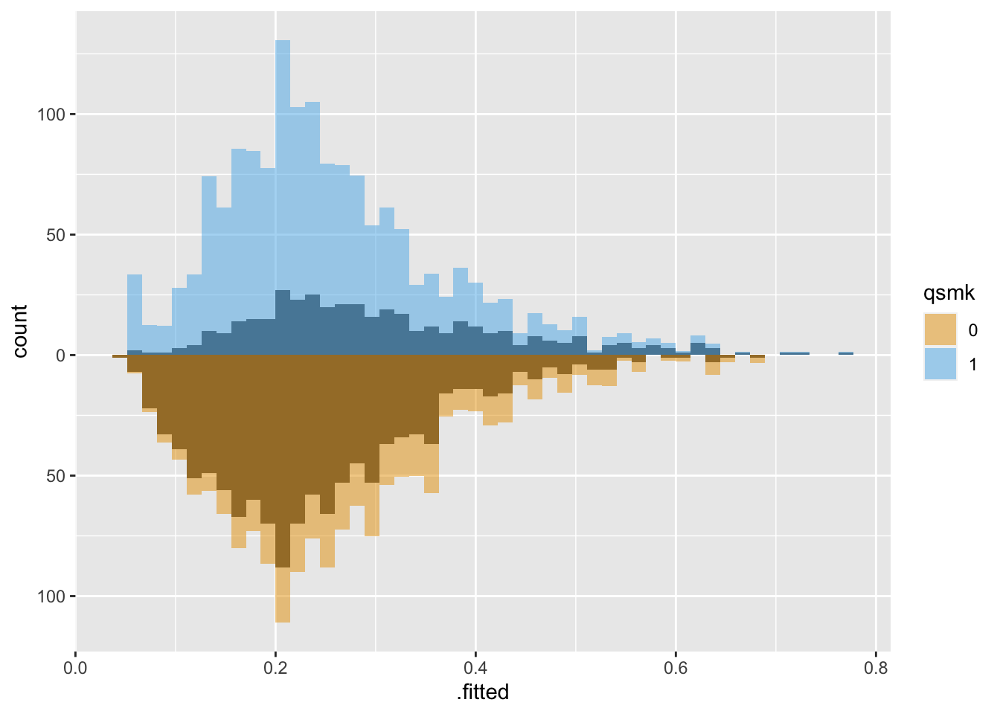

# install.packages("halfmoon")
library(halfmoon)
We’re thrilled to announce the initial release of the halfmoon package to CRAN! halfmoon is a toolkit to assess balance in propensity-based models.
Getting started with halfmoon
halfmoon is a toolkit for assessing balance in propensity score models. Additionally, it can help build your intuition for which populations various weighting and matching strategies are working. Let’s explore some of the things halfmoon can help with.
Let’s take a look at an example using the built-in dataset, nhefs_weights. nhefs_weights is an extension of the nhefs dataset that includes a variety of propensity-score weights for the causal question: “Does quitting smoking increase weight?” You can find the data for this question in the causaldata package.
Population-level balance
The primary tool in halfmoon for assessing balance at the population level is geom_mirrored_histogram().
Here’s the original, unweighted sample using geom_mirrored_histogram(). The histogram on top is the exposed population, those who quit smoking. The histogram on the bottom is the unexposed population, those who did not quit smoking. While there is a lot of overlap, the two groups are slightly different.
library(ggplot2)
library(ggokabeito)
ggplot(nhefs_weights, aes(.fitted)) +
geom_mirror_histogram(
aes(group = qsmk, fill = qsmk),
bins = 50
) +
scale_fill_okabe_ito()Let’s take a look at the same population weighted using Average Treatment Effect (ATE) weights:
ggplot(nhefs_weights, aes(.fitted)) +
# plot the original distribution in dark grey
geom_mirror_histogram(
aes(group = qsmk),
bins = 50
) +
geom_mirror_histogram(
aes(fill = qsmk, weight = w_ate),
bins = 50,
alpha = 0.5
) + scale_y_continuous(labels = abs) +
scale_fill_okabe_ito()
Both groups are upweighted to be more similar.
With Average Treatment Effect among the Treated (ATT) weights, the untreated group is downweighted to be more similar to the treated group:
ggplot(nhefs_weights, aes(.fitted)) +
geom_mirror_histogram(
aes(group = qsmk),
bins = 50
) +
geom_mirror_histogram(
aes(fill = qsmk, weight = w_att),
bins = 50,
alpha = 0.5
) + scale_y_continuous(labels = abs) +
scale_fill_okabe_ito()Mirrored histograms are helpful for the dual purpose of understanding how similar the weighted populations are and precisely the population you’re analyzing.
Variable-level balance
Another perspective on balance is whether or not the distribution of confounders is similar between groups of the exposed. The propensity score model fit for these weights was:
library(causaldata)
propensity_model <- glm(
qsmk ~ sex +
race + age + I(age^2) + education +
smokeintensity + I(smokeintensity^2) +
smokeyrs + I(smokeyrs^2) + exercise + active +
wt71 + I(wt71^2),
family = binomial(),
# these data are loaded with the causaldata package
data = nhefs_complete
)One way to assess if we achieved balance within the confounding variables is by calculating the standardized mean difference (SMD) of the confounder between exposure groups. The closer the SMD is to 0, the more balanced the groups are on average. A common rule of thumb is to have the SMD be less than 0.11.
Let’s calculate the SMDs for each variable using the different weights in nhefs_weights. halfmoon’s tidy_smd() creates a dataset with the SMDs for each confounder, and geom_love() visualizes the relationship.
plot_df <- tidy_smd(
nhefs_weights,
race:active,
.group = qsmk,
.wts = starts_with("w_")
)
ggplot(
plot_df,
aes(
x = abs(smd),
y = variable,
group = method,
color = method
)
) +
geom_love() +
scale_color_okabe_ito()This is called a Love plot, and you can use the love_plot() wrapper function to achieve the same goal:
love_plot(plot_df) +
scale_color_okabe_ito()
One downside to SMD plots is that they only give you information about one statistic that focuses on the center of the variable. For a binary or categorical variable, that’s usually enough. However, a continuous variable could be balanced in the mean but unbalanced in the tails.
Let’s look at smokeyrs, a continuish2 variable that represents the smoke-years a participant had before quitting smoking. We’ll use the empirical cumulative distribution function (ECDF) to compare the differences between exposure groups across the range of smokeyrs.
ggplot(
nhefs_weights,
aes(x = smokeyrs, color = qsmk)
) +
geom_ecdf() +
xlab("Smoking Years") +
ylab("Proportion <= x") +
scale_color_okabe_ito()Now, let’s take a look with the ATE weight.
ggplot(
nhefs_weights,
aes(x = smokeyrs, color = qsmk)
) +
geom_ecdf(aes(weights = w_ato)) +
xlab("Smoking Years") +
ylab("Proportion <= x") +
scale_color_okabe_ito()The balance is much better.
Matching
The examples thus far have used propensity score weights. We can also use the same techniques by treating matching as an extreme case of weighting where the weight for an observation is either 1 (the observation stays in the dataset) or 0 (the observation is removed from the dataset).
halfmoon’s bind_matches() facilitates the comparison of many matched datasets by creating a dataset with these weights for each model.
Consider these two objects from the MatchIt documentation:
library(MatchIt)
# Default: 1:1 NN PS matching w/o replacement
m.out1 <- matchit(treat ~ age + educ + race + nodegree +
married + re74 + re75, data = lalonde)
# 1:1 NN Mahalanobis distance matching w/ replacement and
# exact matching on married and race
m.out2 <- matchit(treat ~ age + educ + race + nodegree +
married + re74 + re75, data = lalonde,
distance = "mahalanobis", replace = TRUE,
exact = ~ married + race)bind_matches() creates a dataset with the original data plus the matching indicator that we’ll use as weights:
matches <- bind_matches(lalonde, m.out1, m.out2)
head(matches) treat age educ race married nodegree re74 re75 re78 m.out1 m.out2
NSW1 1 37 11 black 1 1 0 0 9930.0460 1 1
NSW2 1 22 9 hispan 0 1 0 0 3595.8940 1 1
NSW3 1 30 12 black 0 0 0 0 24909.4500 1 1
NSW4 1 27 11 black 0 1 0 0 7506.1460 1 1
NSW5 1 33 8 black 0 1 0 0 289.7899 1 1
NSW6 1 22 9 black 0 1 0 0 4056.4940 1 1Now that we have variables we can use as weights, we can use the same techniques as with propensity score weighting:
many_matched_smds <- tidy_smd(
matches,
c(age, educ, race, nodegree, married, re74, re75),
.group = treat,
.wts = c(m.out1, m.out2)
)
love_plot(many_matched_smds) +
scale_color_okabe_ito()# use the distance as the propensity score
matches$ps <- m.out1$distance
ggplot(matches, aes(ps)) +
geom_mirror_histogram(
aes(group = factor(treat)),
bins = 50
) +
geom_mirror_histogram(
aes(fill = factor(treat), weight = m.out1),
bins = 50,
alpha = 0.5
) +
scale_y_continuous(labels = abs) +
scale_fill_okabe_ito()Learn more in the book
To see an applied example of a causal analysis using halfmoon, check out the second chapter of Causal Inference in R.
Other techniques
Another way to assess the population created by weighting and matching is to use summary tables. We worked closely with the authors of gtsummary to support weighted tables. gtsummary is an incredible package for making easy, beautiful tables in R, and we highly recommend it.
For an example of how weighted tables can help you understand the population under analysis, check out the chapter on causal estimands in Causal Inference in R.
Future work
halfmoon is early in its lifecycle, although we have been teaching these techniques for several years. Right now, the focus is on causal questions with binary exposures. However, these techniques generalize to other exposures, and we plan to support continuous and categorical exposures fully.